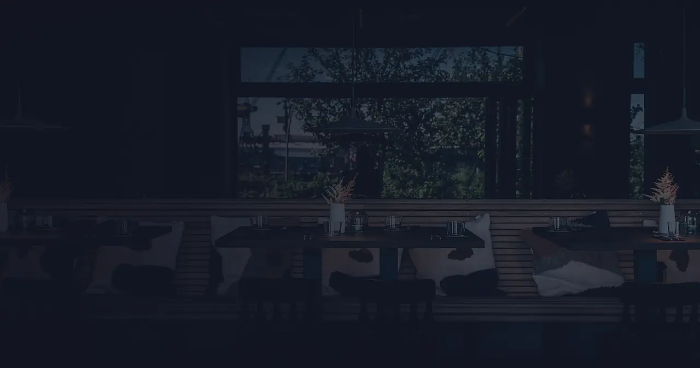

PISCO SOUR
Pisco, Limette, Eiweiß, Angostura
11,50 €

Nach all den kulinarischen Abenteuern verschlägt es uns im Bistro Crudo zurück zu unseren Wurzeln.
Hier servieren wir Tacos, die wir gut finden, Ceviches, auf die wir stolz sein können, und Bar-Food, das glücklich und durstig macht. Egal ob ein kurzer Snack oder ein voller Tisch mit vielen Freunden: Das Bistro Crudo ist euer Wochenend-Bistro für kulinarische Weltreisen im Salt & Silver Style.
Damit keine Langeweile aufkommt, veranstalten wir hier regelmäßig Pop-ups. Freunde und Freundinnen aus aller Welt kochen ihre Spezialitäten und wir sorgen im Gastraum für gute Stimmung. Über die Pop-ups informieren wir im Newsletter und auf Social Media.
Von der Cocktailbar gibt es passende Drinks mit und ohne Alkohol sowie eine nicht zu knappe Auswahl an sehr guten Weinen, kuratiert von Headsommelier Tobias Beck.


Die Classics, easy Bar-Food und wechselnde Pop-ups mit eigenen Speisekarten.
Pisco, Limette, Eiweiß, Angostura
11,50 €
Casadores Reposado, Limette, Agave
11,50 €
Hendricks Gin, Campari, Wermuth
12,50 €
Minze, Mandarine, Bergamotte, Soda
10,50 €
Limited Edition mit Niepoort, 10 Jahre, Douro Tal, Portugal · 0,05
7,50 €
Domaine EPC, Montagne de Reims · 0,1
14,00 €
Brot, Butter & Pickles
11 €Catch of the day, Ajo Blanco, Melone, Shiso
21 €
Burrata, Gurke, Jalepeño, Feige
14 €
Landgarnele, Harissa-Butter, Aioli
16 €Austernpilz, Chilimayo, Cole Slaw, Koriander
14 €
Galloway-Shortrib, Pico de Gallo, Tortilla-Espuma
28 €
Crumble, Joghurt
8 €


Weitere Flaschen stehen in der Karte.
Stand der Karte: 27. Mai 2025. Preise in Euro. Bei Pop-ups gilt die Karte der Gäste am Herd. Ein Teil der Gerichtefotos ist als Platzhalter erzeugt, bis eigene Aufnahmen aus den Küchen da sind.
Im ehemaligen Levante, davor Streetfoodbar, residiert seit dem 30. Mai 2025 das Bistro Crudo.
Nichts vereint Fernweh und Heimat für uns so sehr wie der Hamburger Hafen. Zum Glück dürfen wir diesen Blick das Zuhause unserer Restaurants nennen.

Ein kurzer Snackoder ein voller Tisch.